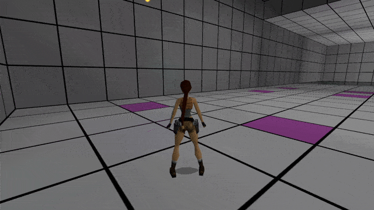

We are continuing the topic of update functions. After whetting our appetite in the first half of the chapter, we’re about get into the truly wild territory, which shows what update functions are really capable of.
The first section dives into the topic of particle functions, which are specialized, built-in API functions that operate directly on particles. These mighty functions allow to achieve incredible feats, resulting in intricate particle behavior. By leveraging these particle functions, you can make particles interact with their surroundings or otherwise exhibit unique behavior that is either impossible, very difficult or cumbersome to achieve conventionally. Using the right combination of such functions, you can make particles bounce off walls and floors/ceilings, make them target and home on specific moveables, detect when they collide the moveable and trigger an explosion and deal damage to the enemy (or Lara!) or perhaps make them follow an object around but keep their distance and emit a custom dynamic light which illuminates dark areas (acting more as a companion to the protagonist, maybe). The opportunities are truly countless, as you see.
Next up, we will embark on the very interesting topic of making particles spawn (or birth) other particles, to form trails, auras and other composite, multi-particle effects! This is a direct consequence of update functions permitting nearly anything that is programmable in Lua, including calling other user-defined functions (like the init function of a particle). However, especially with this feature, you can shoot yourself in the foot and make the game crash or severely lag if you aren’t handling it with care. For this reason, the section dedicated to it first starts out with heavy warnings to be very cautious with this spectacular, but potentially dangerous aspect of particle scripts.
As we have seen in the previous half of the chapter, we can already do plenty of different things with our particles in update functions. Manipulating their fields, frame by frame, is certainly a lot of fun. However, the usefulness of this feature would not be as groundbreaking, if that’s all you could do with it. After all, I promised that thanks to update functions, particles can not only be manipulated in real time, but can also be instructed to interact with their environment. How do we make the particles interactible, though? None of the particle properties described to us seem like can help in achieving that.
Indeed, particle properties alone will not help in this task. What will help is particle functions.
What are particle functions?
Simply put, they are built-in functions defined in the plugin API, which operate on particle instances.
You may be thinking we have already seen “particle functions” in action before. Init and update are functions that work with particles, aren’t they? Indeed, these are functions through which we manage particles. But these functions are written by ourselves (they’re user-defined functions). Init functions are meant to establish when and how to bring a new particle into the world, so they’re more like particle spawn instructions. Update functions are conceptually much closer to particle functions, since they operate on already existing particle instances, through the part argument. Regardless, init and update are user-defined functions, that are written by the coders of the effect, rather than being built into the API itself.
Particle functions, on the other hand, are built-in functions in the plugin, available through the particle scripting API. They can be called by the user, inside init and (most commonly) update functions.
What do particle functions do?
They perform specific operations on particle instances.
What kind of operations are we talking about? Well, pretty much anything you can think of. You want a particle to collide with room geometry? There is a particle function for that. You want particles to react to the wind of an outside room? There’s a particle function for that as well. You want a particle to track a specific moveable and accelerate towards its direction, behaving like a homing missile? You bet, there’s a particle function for it in the API. You want a particle to detect when it collided with the moveable it was homing onto? There’s yet another particle function for it. Such particle functions allow particles to interact with their environment in various, unique ways.
Not all particle functions exist for that purpose. Some of them focus only on the particle itself and do not care about the outside world. For example, partAnimate() is a particle function that allows to animate a particle, so we do not have to put in additional work in figuring out the proper code. Another example, partKill() is a function which kills the particle prematurely, before its lifeCounter runs down to 0 (for example, we want to make it disappear, because it hit a target). Particle functions assist in coding more sophisiticated particle behavior. They are like puzzle pieces, from which we can build complex behavior of particle effects.
Why do particle functions exist?
They are meant to do the “heavy lifting” of tasks performed with particles. Since they are compiled into the plugin DLL, they work more efficiently than any functions we could write ourselves. Lua, as great and as fast as it is, will never outperform compiled code, such as that of a binary DLL file. For this reason, the more of the code we can delegate to the plugin, the better performance we can squeeze out of the particles!
On top of improving performance, particle functions simplify writing code for your custom particle effects. If you’re lazy, you will be thrilled to read this. If you’re ambitious, coding every kind of behavior might seem like fun challenge at first. Trust me that after a while, you’ll eventually become one of the lazy ones and would much rather have a function that already does it for you. Finally, particle functions allow to internally handle things that would otherwise be very messy in Lua. Writing everything in Lua, though theoretically possible, given enough time and resources, would be very difficult and not worth the effort. There is no reason to write 200 extra lines of code, if all it really takes is one call to a function from the API. You end up with less drawn-out script files, improving readability – the particle function does what it needs to do in the plugin’s backstage, keeping your scripts clean and free from unnecessary bloat.
For the above reasons, it is always recommended to use a particle function if one exists for your intended goal, rather than attempt to reinvent the wheel (as with particle animations earlier). Coding such behavioral functions in Lua should really be the last resort, if no suitable built-in function exists for your tasks. In such case, you may ask the plugin’s developers if we can add your idea as a particle function directly to the plugin, especially if it is something that could be generally useful. We’re open to such suggestions!
What do particle functions look like?
A particle function name always begins with part... , followed by some verb or a compact description of the task the particle is meant to perform. For example, partAnimate() animates a particle, partLimitSpeed() limits the speed of a particle to a given maximum, partCollidedItem() checks if a particle collided with an item and returns a corresponding boolean value. As was mentioned above, a particle instance is always the first argument to a particle function, and may be followed by other arguments:
partFunction(part, ...) -- particle instance, optionally followed by other arguments
We will see examples of actual particle functions in action soon.
How to use particle functions?
Particle functions are just like other kinds of built-in API functions, meaning they take a varying amount of arguments and may or may not return values. What distinguishes them from ordinary built-in functions is that they always take a single particle instance as the first argument – the particle instructed to peform the desired task (otherwise it wouldn’t be any different from an ordinary function).
Everything else depends on what additional information must be provided to the function for performing its task, and what is the return value of the task, if there even is such a result. Particle functions are mainly to be used within our update functions, driving the behavior of the particle groups, but some of them can also be called inside init functions, in specific cases.
We will explore a few examples of particle functions and their usage in the next few sections.
A good particle function to examine first would be the aforementioned partAnimate() function. As it is easy to guess, this function will animate particles over a sequence of sprites. It looks like this:
partAnimate(part, start, end, frameRate) -- arguments of the partAnimate() function
We can see that the function takes four arguments:
part – the particle instance, this is the mandatory first argument for every particle function
start – the starting index (integer ≥ 0)
end – the ending index (integer ≥ start)
frameRate – the framerate of the animation (integer ≠ 0)
The function will cause part to cycle through sprite textures, beginning from the start index and ending on the end index. A positive frameRate indicates how many frames it will take to move to the next texture in the sequence. The function instructs part to perform this “animate” task.
Does this function return anything? The animation task is quite trivial. The particle is just supposed to move to the next “frame” of the animation sequence, looping back to the start after it reached the last end index. This merits no “response” from the function, hence it has no return values.
Remember the code we used to get particles to loop through all textures in DEFAULT_SPRITES, back in the first half of this chapter? Here it is again:
local function dustUpdate(part)
part.spriteIndex = (part.spriteIndex + 1) % 33
end
Because we’ve now discovered the partAnimate() function, we won’t need a special formula, we can use the particle function instead!
First of all, this function asks for a particle instance that we want to animate. Particle instances are passed to update functions via the alias (argument name), which per our convention, is named part. Therfore, part is what we pass as the first argument to the partAnimate() function as well (as we do for all particle functions, generally speaking).
We want the particles to start with spriteIndex = 0 and end with spriteIndex = 32, after which they loop back to the start. What shall be the start and end values passed to the function? No, this is not a trick question, it’s 0 for start and 32 for end.
And what about frameRate? In the original update function formula, the spriteIndex updated on every frame. This meant that the frame rate of the animation was equal to 1. Which is precisely the value we should use for frameRate, easy!
Putting it all together, the new update function should look like this:
local function dustUpdate(part)
partAnimate(part, 0, 32, 1) -- part, start = 0, end = 32, frameRate = 1
end
There, it really is that easy. It is now a simple call to a built-in API function, made exactly for this purpose. No need to reinvent the wheel.
Notice, if we want to change the animation range, we only adjust the start and end arguments passed to the function.
If we wanted the texture to update not on each frame, but only every n-th frame (e.g. every second frame, every third frame, fourth frame ...), we simply use the appropriate integer (2, 3, 4, ...) for frameRate. Would you be able to figure out how to make it so the animation updates only every 2nd frame, or every 3rd, with the “modulo formula” we previously used? It’s doable, but not so straightforward. And that is why the frameRate argument of partAnimate() takes care of this business for you.
There is also a secondary feature to the frameRate argument. It accepts negative integer values, with a wholly different meaning. When you pass a negative integer for frameRate, it indicates the number of full animation cycles to complete in the course of the particle’s lifetime. The plugin figures out on its own how to adjust the frameRate of the animation sequence to fulfill this request. A frameRate of -1 tells the particle to complete one entire animation cycle. -2 tells it to complete two whole cycles, -3 indicates three whole cycles, and so on. This is useful to ensure that the particles will always finish the last animation cycle on the final end sprite texture, even if the part.lifeSpan values are different for each particle.
Note for future reference: this function will work identically for mesh particles (animating the meshes in a sequence), but we will be covering those in the subsequent chapter.
Back in Chapter 1, we have already toyed with the idea of making particles fall towards the floor, by setting some Y acceleration value. The problem we encountered was that these particles will not respect floor or wall collisions on their own. Collision with room geometry is a behavior that is made possible with particle functions called in the group update function. Although at first glance, it would seem more “convenient” to have all particles automatically enact such collisions, it makes more sense that this collision behavior is opt-in, rather than being always enforced for every kind of particle (sometimes, you indeed want particles to be able to phase through walls and floors, or it doesn’t matter because they never touch room geometry anyway). Fortunately, enabling simple physics-like collisions for our particles is not that difficult, all thanks to two special particle functions.
Function partCollideWalls()
Let’s examine the first of these room collision functions, partCollideWalls():
partCollideWalls(part, rebound)
This function makes particles detect collisions with walls and bounce off of them, changing their direction accordingly. It takes two arguments:
part – the particle instance
rebound – rebound factor, a float value between 0.0 and 1.0
The part argument is self-evident, but what about rebound? It controls how much “bounce-back” there will be when the particle collides with a wall, for example a rebound of 1.0 means that the particle retains 100% of its initial velocity after bouncing off the wall, 0.75 would mean the particle retains 75% of the velocity upon each collision, and so on (think of a rubber bouncy-ball, the closer rebound is to 1.0, the more perfectly “bouncy” it will be).
Does the function return anything? Yes, it returns a boolean value, telling us if a collision occured on a given game tick (true) or not (false). This can be useful, for example to play a sound effect when the particle bounces off the wall, or perhaps to spawn ricochet particles at the point of impact. You can construct an if-condition with the return value, like so:
local impact = partCollideWalls(part, 0.8) -- detect collision with walls and bounce off with 80% rebound, returning a boolean
if impact then -- if collision occured -- do something here
end
Since the function will return a boolean, we do not necessarily need to catch the returned boolean in a variable (unless you want to reference this value again, later). A shorthand to the above is simply:
if partCollideWalls(part, 0.8) then -- if collision occured -- do something here
end
but depending on your familiarity and coding preferences, such code may be harder to read or understand.
Upon collision, the particle velocity will also change direction accordingly, reflecting off the wall with which it succesfully collided.
Function partCollideFloors()
We have a function for collisions with walls, what about floors and ceilings? There is a separate particle function for that – partCollideFloors(). Although its name does not explicitly mention ceilings, it handles ceiling collisions as well. This function has more arguments than the wall function:
margin – an integer ≥ 0 specifying a collision margin (how many units away from the floor/ceiling the particle should detect a collision)
accurate – a boolean that informs whether the collisions should respect floor slopes (true) or ignore them (false)
These additional arguments allow to fine-tune the behavior of the floor/ceiling collisions, depending on the use case. Just as with partCollideWalls(), this partCollideFloors() function also returns a boolean, informing if a collision with a floor or ceiling occured on a given game tick.
Let’s put the two room collision functions to use and create some colorful, bouncy particles, that will bounce around the room! We will use the following script, that spawns colorful particles from Lara’s head mesh:
local bounce
local function bounceInit()
local part = createSpritePart(bounce)
-- spawn from Lara's head
part.emitterIndex = getLaraIndex()
part.emitterNode = 14
local px = randomFloat(-64, 64)
local py = randomFloat(-64, 64)
local pz = randomFloat(-64, 64)
part.pos = createVector(px, py, pz)
-- we use createColorHSV() to get a random color
local hue = randomInt(0, 359)
part.colStart = createColorHSV(hue, 1.0, 1.0)
part.colEnd = part.colStart
-- give particle a random upwards velocity
local vx = randomFloat(-64, 64)
local vy = randomFloat(-128, -64)
local vz = randomFloat(-64, 64)
part.vel = createVector(vx, vy, vz)
-- finally, we set a positive Y accel for our "gravity"
part.accel.y = 6
end
local function bounceUpdate(part)
end
bounce = createGroup(bounceInit, bounceUpdate)
It would seem we are all set to begin discussing the update function. But before we get to it, I have to go on another technical tangent, so bear with me…
If you remember way back in the introduction, we mentioned a room index as being one of the properties of a particle. However, we did not bring it up anywhere in the whole of Chapter 1. The reason was simple, if our particles were not doing any collision detection, there was no point to setting a room index for a particle. This room index is not used for any other purpose, it does not determine if a particle appears from one room when viewed from another, for instance. We can thus ignore setting it, the room index can easily remain at the default of 0.
This matter changes completely if we have particles that actively test for collision (especially collision with room geometry) in the update function. Why does the room index suddenly become important? I mean, aren’t the particle’s XYZ coordinates sufficient for telling the game engine where it is? Suprisingly, they are not!
Classic Tomb Raider’s peculiar coordinate system
You see, the spatial coordinate system of the TR engine is more complex than it would seem at first glance. Normally, in an ordinary 3D world, it is enough to specify 3 cartesian coordinates, such as (X, Y, Z), to uniquely describe every possible location in the 3D space. However, the world of the TR engine is not so… ordinary.
In our beloved engine, there are cases where the same XYZ coordinates can occupy two completely different positions in the level map! Are you shocked by this revelation? Allow me to jog your memory. If you played Tomb Raider III, do you recall the UFO at the end of the Area 51 Nevada level? Presumably due to some advanced alien technology, it was bigger on the inside than on the outside. How was this even feasible in a late 90’s game engine? Well, the answer is that aside from 3D XYZ coordinates, there is also a fourth “room coordinate”, that describes where Lara, the camera, or some other object/entity is currently located. As demonstrated with the UFO, rooms can overlap with each other, but the engine can consider them as two separate locations in space (this can be confirmed when examining the layout of the Area 51 map in a level file explorer like TRView). It is only with these four coordinates (XYZ + room index) that one can unambiguously describe an object’s location in the classic TR engine.
In the case of 3D objects (moveables and statics), the room index serves an extra purpose. During the rendering phase, the engine performs room culling, meaning that objects belonging to a room, to which no portal is currently visible, will not be rendered. This spares some processing power usually, since it is more efficient to first check room portal visibility, before proceeding with individually evaluating each object’s visibility for rendering.
Particle rendering done by the plugin does not perform room culling, though. How is the room index relevant to particles, then?
If a particle must test collision with the geometry of some room, you need to specify to the particle which room you are talking about, the part.pos is not enough. This is because, as was already pointed out, the XYZ coodinates alone are insufficient to fully resolve the location in the engine. In the edge case that two rooms (room A and room B) overlap with each other, not specifying the right room could result in particle appearing in room A, but colliding with the geometry of room B, or not even colliding at all, phasing through, despite using collision particle functions! The room index is thus needed to disambiguate the actual position for these room overlaps.
What will happen if a particle crosses into a new room, through a portal? This is actually handled by the plugin, fortunately. When either room collision function is used, the room index will be accordingly updated through portals. However, for this to work reliably in the first place, the initial room index of where the particle has spawned must be set accordingly, otherwise this feature will not work correctly.
We now know why we should specify a room index for particles for the purposes of testing collision. This particle room index is accessed by none other than part.roomIndex. It holds any value from 0 up to the highest room index in the given level. A word of caution here, do you remember that the moveable indices in part.emitterIndex must be the special Tomb4 indices, not the ones from the level editor? Well, a similar speech applies to the room indices. The ones listed in the editor are often not equivalent to the room indices in the compiled level, since in the building process, any gaps are removed and flipped rooms will be treated as separate rooms under a unique index (on top of that, Tomb Editor can shift around room indices for proper handling of vertical room portals).
How do you acquire the correct room index, then? Well, I assume that by now you are spawning your particles relative to some part.emitterIndex, and not using the clunky copy-pasted-level-coordinates approach from the beginning of Chapter 1! When a (valid) emitterIndex is given, the plugin automatically grabs the room index associated with the emitter item and assigns it to the particle implictly, for convenience. However, there are complex scenarios, where particles may be spawned without an emitterIndex, thus no implicit roomIndex, either. For such cases, there are separate strategies, but we will not be focusing on them now.
Anyway, since setting an emitterIndex already sets the roomIndex, we can proceed with writing the update function.
Update function for room collision
Now, in the update function, we will call the partCollideWalls() and partCollideFloors() functions, to make bounce particle instances bounce off walls and floors. Something to note, when you use both functions like this, for some niche technical reasons, you should call partCollideWalls() first, and partCollideFloors() second, to ensure correct resolution of collision order. Anyway, here is an example:
local function bounceUpdate(part)
local rebound = 0.75 -- for added realism, want each bounce to retain 75% of the velocity
local margin = part.sizeCust / 2 -- set margin to half the current part size
partCollideWalls(part, rebound) -- we call the wall function first
partCollideFloors(part, rebound, margin, true) -- and then the floor function
end
We see that we first created helper variables that hold some of the argument values for the particle functions we will use. Not strictly necessary, but it makes the code easier to follow. Of note is a very interesting line:
local margin = part.sizeCust / 2
Here, we are not overriding part.sizeCust as we would usually do in update, but reading from it. Recall that if we don’t overwrite part.sizeCust, it will hold the current blended value between part.sizeStart and part.sizeEnd. We are taking this blended value and dividing it by 2, saving the result in local margin. Later, we are passing this value to the function:
partCollideFloors(part, rebound, margin, true)
This means that floor collision will respect the size (radius) of the particle. You can verify this claim by making the particles change their size during lifetime (e.g. set in the init function part.sizeEnd = part.sizeStart * 4). If we would set the margin to 0, the particles will end up visibly clipping into the floor once they settle out, which becomes more noticeable the bigger the particle size is. Hence, taking the current size value for the margin makes the particles have some “dimensionality”.
For the accurate argument of the partCollideFloors() function, we used the true boolean value. This means that the particles will react more realistically to sloped surfaces (otherwise, they would see all floors as flat, taking only the height into account).
Check out the in-game result of this update function!
After launching our level, we see that we have many colorful particles (reminiscent of plastic balls from children’s ballpits), spawning from Lara’s head. They fall towards the ground and as they hit the floor, they bounce off repeatedly! We have just implemented some simple physics for our particles, and it took only calling two particle functions to accomplish!
This is what I meant with particle functions doing arduous tasks for us. These collision functions take care of whatever logic there is behind detecting collision with room geometry and calculating the new velocity after the particle bounces off. We do not bother with intricate mathematical details of how this is done, we can simply focus on the “big picture” of what we want the particles to do.
Colliding particles are super cool and we will definitely be coming back to this idea for future effects. Meanwhile, let’s learn about other interesting particle functions.
Many times already, I advertised particles behaving like missiles that target a specific moveable, adjusting their trajectory to reach the object. This is made possible thanks to yet another particle function, partHoming().
Let’s take a look at the partHoming() function and its arguments:
As you can see, it has a quite robust set of arguments. Here their meanings:
part – the particle instance
targetIndex – tomb4 index of the targetted moveable item
targetMesh – integer, can further specify a concrete mesh of a moveable to target. Can also be -1 (no mesh).
turnRate – informs how quickly the particle will curve its direction towards the target, value expressed as a percentage of difference. Float in the range [0.0, 1.0]
speedUp – informs how much the particle will accelerate towards the target, on each frame. The value 0.0 indicates no acceleration.
predict – boolean, informs whether the particle should take into account the motion of the moveable to predict the target’s destination (true) or not (false). No prediction is less computationally heavy, but may cause homing particles to lag behind quickly moving targets.
Aside from the obvious particle instance part, the function requires the targetIndex, the Tomb4 item index of the moveable item which will be targeted by the particle. Remembering spawning particles from emitters in Chapter 1, there is a function to convert the NGLE index to a Tomb4 index, getTombIndex(). We can convert an NGLE index taken from the level map with this function.
The next argument, targetMesh, can either take an mesh index, or alternatively take -1, for no mesh. If we do specify a mesh, the target position is adjusted to this mesh. With targetMesh = -1 the moveables item pivot position is used instead. Bear in mind that with many enemies (also Lara, for that matter), the point point is often at the ground level, you may want to actually specify some targetMesh, so some other point is the target.
The turnRate is a bit tricky to understand at first. It is a percentage (more specifically, a decimal fraction) of the difference between the current facing of the particle and the ideal facing for the particle to be oriented head-first towards the moveable. For example, with turnRate = 0.1, the particle will move to face the target by 10% of the current difference. On the next frame, it will turn by another 10% of the current difference, and so on, until it reaches the target facing. Since this value acts like a percentage, only values in the range 0.0 to 1.0 are accepted.
With a higher turnRate, the particle will reach the ideal facing faster than with lower values, which will make the particle seem more sluggish. It is one of those values that needs to be trial-and-errored until you develop an intuition for it.
The speedUp argument describes the by how much to speed up or slow down the particle on every frame while it is homing onto the moveable. You can also not alter the speed of the particle by passing 0.0 to this argument.
Finally, we have the predict boolean. When predict = true, the particle gains some “intelligence”, in the sense that when homing to a moveable position, it factors in the direction and speed of where the moveable is travelling. Naturally, this only makes a difference for targets that are moving.
To test out this homing functionality, we can try setting up a trap of sorts: an emitter with NGLE index 15 will spawn particles, that will target Lara:
local trap
local function trapPartInit()
local part = createSpritePart(trap)
part.emitterIndex = getTombIndex(15)
local px = randomFloat(-64, 64)
local py = randomFloat(-64, 64)
local pz = randomFloat(-64, 64)
part.pos = createVector(px, py, pz)
-- give particle a random spherical direction
part.vel = randomSpherePoint(10)
end
local function trapSpawn()
if interval(3) then
trapPartInit()
end
end
local function trapUpdate(part)
end
trap = createGroup(trapSpawn, trapUpdate)
Here is an example of using the partHoming() function on Lara as a targetIndex, but you could certainly have chosen a different moveable to target. We will also set the targetMesh to 7 (her torso), the turnRate to 0.1, the speedUp to 1.0 and predict to false.
local function trapUpdate(part)
local index = getLaraIndex() -- get Lara's index
partHoming(part, index, 7, 0.1, 1.0, false) -- particle will target Lara
end
Once in game, you will notice the particles speeding up towards the Lara and possibly curving to reach her as she moves around. The only true way to get a feel for how the parameters affect the particle is to play around with them (increase one argument, decrease another other argument and see what happens).
Obviously, the particles do not actually do anything once finally reaching Lara, because that is not the job partHoming(). It only does what it says on the tin, it homes the particle to the desired moveable object and that’s it.
To make the particles actually do something once they touch Lara, we must employ another particle function, partCollidedItem(). This function verifies if the particle is within collision bounds of the moveable, and returns the boolean true if it is (otherwise, false gets returned).
partCollidedItem(part, moveableIndex, radius)
The arguments are as follows:
part – the particle instance
moveableIndex – tomb4 index of the moveable item to test collision against
radius – the spherical radius of the particle for testing the collision bounds of the moveable. Can be any float number ≥ 0
Similarly to the wall and floor collision functions, this function also returns a boolean which tells if a particle is colliding with an item (true) or it is not (false). Note: colliding means the particle’s position vector crossed into the item’s bounding box.
The radius parameter spherically expands the collision range for the particle. At 0, the exact position of the particle is tested against the bounding box. A positive value, like 128, means that a sphere of radius of 128 units with a center at the particle's pos vector is tested with the bounding box.
Testing against bounding box collision is quite fast and can be done repeatedly by hundreds of particles per frame, with ease. We can thus use the function to test if the particles made a collision with Lara:
local function trapUpdate(part)
local index = getLaraIndex() -- get Lara's index
partHoming(part, index, 7, 0.1, 1.0, false) -- particle will target Lara
-- next we test if part collided with her
local collided = partCollidedItem(part, index, 0) -- placing the result in variable is optional
if collided then -- did part collide? -- do something here
end
end
Now, we are missing a something to put inside the if condition block, which would occur when the particle collides. Hmm, such homing particles kind of look like they are some projectile that will harm Lara. It would be neat if Lara lost health when the particles touch her, right? How could we achieve that? Well, one way that comes to mind is using TRNG triggers.
The plugin allows to trigger TRNG TriggerGroups from Lua, via the function performTriggerGroup(). We could export the FlipEffect 89 TRNG trigger, that harms Lara by X amount of health, e.g. 5 hitpoints:
; Trigger for FlipEffect
; <#> Lara. (Health) Damage Lara, decreasing life by <&> percentage of full vitality in (E) way (F89)
; <&> 0.5 Percentage
; <E> Immediatly, one-shot
; Copy following values to your script:
; $2000,89,$0004
And put it in some TriggerGroup script, say, with ID 71:
TriggerGroup= 71, $2000,89,$0004
We can then execute TG71 from inside our Lua script, with the performTriggerGroup() function:
if collided then -- if part collided
performTriggerGroup(71) -- perform TG 71
end
The performTriggerGroup() function allows to temporarily jump from Lua into TRNG and execute the TriggerGroup from the script for the current [Level] section, then return back the script. In general, this is very useful to integrate Lua scripts with some TRNG features, so keep it in mind for future notice!
But specifically for hurting poor Lara, there’s an even easier way to achieve this, directly in our code! You can access Lara’s current amount of hit points (health) by writing Lara.hitPoints in the Lua script. How can we decrease her health by 5 hp? Very simple, by performing a two step assignment, of the form:
local health = Lara.hitPoints -- copy Lara's hitPoints to 'health' var
Lara.hitPoints = health - 5 -- subtract 5 from health and assign it back to Lara.hitPoints
We can also do without the health helper variable, in a single line:
Lara.hitPoints = Lara.hitPoints - 5 -- subtract 5 hp from Lara
Either of the above snippets will harm Lara with 5 hitpoints of damage.
Let’s see this in action by putting this line inside the if block checking for collision between Lara and a particle:
local function trapUpdate(part)
local index = getLaraIndex() -- get Lara's index
partHoming(part, index, 7, 0.1, 1.0, false) -- particle will target Lara
-- next we test if part collided with her
local collided = partCollidedItem(part, index, 0)
if collided then -- if part collided
Lara.hitPoints = Lara.hitPoints - 5 -- subtract 5 hp from Lara
end
end
I know, you really want me to tell more about this magic piece of code that referenced Lara’s health directly in Lua. But this topic will need its own chapter to cover it sufficiently, by introducing built-in globals in the plugin API. Just be patient, I promise we will get there eventually!
After giving it a run in game, we see these particles now have the ability to kill Lara! No longer harmless, ambient effects, huh?

The particles have perhaps become a bit TOO deadly now, eating through her health very rapidly. This is because all of the particles in direct contact with Lara are each applying 5 hp of damage, per each frame. That means that if there are 5 of these trap particles touching Lara at any given moment, she will lose health at a staggering rate of 25 hp per frame (for reference, fire makes her lose health at a constant 7 hp per frame).
We can do something to reduce the damage dealt by the particles, though. What if the particles were killed off upon hitting Lara? Meaning that the particles would deal damage and die immediately afterwards. That should reduce the damage output significantly.
We know particles die the moment their lifeCounter goes down to 0. So, we could directly set part.lifeCounter = 0, after doing damage to Lara in the update function, right? Well, it sounds reasonable, and it will probably work, if you try it. But I do not recommend tampering with the part.lifeCounter and part.lifeSpan values outside of the init function. There are specific technical reasons for this that I am yet to cover. Anyway, instead of setting the part.lifeCounter to 0 explicitly, the preferred solution is to call a particle function that will kill the particle. I’ve mentioned it before actually, it’s partKill(). It takes just one argument, the particle instance part:
partKill(part) -- kill particle immediately
It destroys the given particle instance, but does it in a manner that is considered “safe” and ensures that the particle will not be left in a broken state afterwards. Just take my word for it for now – don't set part.lifeCounter = 0 when you need to kill a particle on the spot, utilizing the special partKill() function is the proper way to do that.
Okay, so lets add the call to partKill() after subtracting a hitpoint away from Lara:
local function trapUpdate(part)
local index = getLaraIndex() -- get Lara's index
partHoming(part, index, 7, 0.1, 1.0, false) -- particle will target Lara
-- next we test if part collided with her
local collided = partCollidedItem(part, index, 0)
if collided then -- if part collided
Lara.hitPoints = Lara.hitPoints - 5 -- subtract 5 hp from Lara
partKill(part) -- and kill the part
end
end
Now, the damage appears more reasonable, and the particles disappear once they successfully hit Lara:
The above update function started out simple if you remember, but already grew into something quite substantial – we have a script which makes particles lock onto Lara, deal 5 hitpoints of damage to her and disappear. To accomplish this, we used a total of 3 different particle functions: partHoming(), partCollidedItem() and partKill(). This is how we can create complex behavior of particles, by assembling various particle functions together in the Lua code. The above update function can be a basis for other situations where particles must deal damage Lara, without a doubt!
I think we’ve had enough examples of particle functions at the moment. By now, you probably understand why they exist and why they are so convenient. Of course, there are plenty more of them in the API. I don’t intend to go through every single particle function, there are far too many and I would be wasting both my time and yours. In these tutorials, I would rather focus my energy on demonstrating practical examples that show how these functions can be used, all the while exploring other topics, many of which still remain. I promise we will see more particle functions further in the tutorials. That being said, we’ll carry on to the next topic.
Likely, you’ve been eagerly awaiting until we get to this feature. Indeed, update functions have the power of making particles spawn other particles! There are numerous use cases for this. Maybe we want a particle to leave a flame or smoke trail? Maybe the particle will spawn ricochet sparks when it hits a wall? A homing missile might cause an explosion when it hits its target? The possibilities are endless.
However…
This feature is a double-edged sword. You see, the ability of a particle to spawn another particle can potentially cause particles to spawn at an uncontrollable rate, if you aren’t cautious with it.
What can lead to this scenario? Well, imagine that you have a particle. In its update function, it spawns 10 new particles each tick. 10 particles does not sound like much. But remember, update functions are executed on every frame, for each active particle. What if the parent particle (which spawns particles) has a long lifetime, like 10 seconds? 10 seconds is 300 frames. That means the update function for just that one particle is executed 300 times. Assuming the birthed particles live just as long as the parent particle, that lone parent particle will birth 300 more particles. Okay, that still sounds somewhat reasonable. But what if there were several parent particles? Say, 20. Since each parent particle spawns 300 particles over the course of its life, 20 parent particles will spawn 20 * 300 = 6000 particles! We’re already well into the thousands!
Nevertheless, this is still the more “optimistic” scenario, as we made the assumption that the birthed particles will not be bringing more particles along with them. What happens if these birthed particles end up spawning particles themselves? Let me tell you:
ALL HELL BREAKS LOOSE!!!
Let’s go back to one parent particle with a lifetime of 10 seconds. It will now spawn just a single child particle per frame. On the first frame, it spawns a child. We now have 2 particles. On the second frame, the parent particle spawns another child. But the (former) child particle spawns its own child particle. Now there’s 4 particles. On the 3rd frame, the 4 particles will each spawn their own child, giving 8 particles. You see where we are heading, right? On the 5th frame, we end up with 16 particles, on the 6th – 32, 7th – 64, so on each frame the number of particles doubles. This type of situation, where something doubles (or triples, or quadruples) in each successive iteration, is known as exponential growth. Take a guess, assuming the doubling pattern continues, how many particles do you think we will end up with after just 1 second (30 frames)?
1 073 741 824 (that’s right, over 1 billion!)
Are you shocked? Try doing the math yourself, if you don’t believe this is the case! This unexpectedly gigantic inflation of the amount, after a few dozen iterations of doubling something, has been known since ancient times as the famous wheat and chessboard problem.
I will inform you right away – the particle system plugin cannot handle that many particles, not by a long shot. You can expect to achieve somewhere around at most 8000 active particles with this plugin, before hitting a hard limit, due to the technical limitations of the old TRLE engine. But even the peak of what modern, state-of-the-art game engines can reasonably achieve these days with no lag, is around 50-100 million particles, if a high-end GPU is used. That’s considerably more than our plugin, but let’s put things into perspective: the TRLE engine is nearly 30 years old at this point. It cannot utilize fancy, expensive GPU cards, it would have to be rewritten from the ground up to do so.
When spawning particles in update functions, you must employ some preventive strategies to restrict the growth of particles in an exponential way. You do this by not getting too carried away with the number of new particles you are spawning, as well as keeping the lifetime of the birth-ing (and birth-ed) particles within reason. And most certainly, you must avoid situations when particles spawn new particles of the same group, as that is precisely the situation that will lead to out-of-control exponential growth.
Now, with all of the warnings and cautions out of the way, I’ll stop being a stick-in-the-mud. Let’s have a bit of fun with the particle-spawned-by-particle feature!
First of all, we have to lay out some fundamentals, to understand how to make one particle type spawn another particle type. For this to work properly, we need two particle groups:
one group for the parent (birth-ing) particles
another group for the child (birth-ed) particles
These groups have to be distinct for the parent and child particles. The parent particle will, in its update function, birth the child particles. By no means should the child particle group ever share its update function with the parent group, because, as we discussed already, we will have exponential particle growth! If the particle behavior is decoupled (meaning that the update functions are separate) it makes the particle spawning very controlled. Think about this logic and make sure it makes sense to you, as understanding this parent-child relationship in context of the particle groups is the key to mastering hierarchical particle spawning.
The next realization should be about how the relationship between the init function and its group is more loose than the relationship between an update function and its group. Let’s say we have a group we name parentGroup, and another group we name childGroup, respectively for the parent particles and child particles. The parent group can have an init function, e.g. parentInit(), and the update function, parentUpdate(). Finally, we create the parent group with the line:
When we are providing the parentInit function in the createGroup() call, what we are really telling the plugin is: take this parentInit() function and automatically call it once per game tick. That’s really all that the plugin does with the init function passed to createGroup() (it is not as intimately tied with the group as one would think). We can surely make the init function spawn a particle from the group, which is indeed the most common course of action, but we don’t have to.
We will momentarily have yet another throwback to Chapter 1, when we were modifying the particle spawnrates. The actual, “master” init function, dustInit_chance(), created new particles only occasionally. But we could just as well have put:
local function dustInit_chance()
print("I'm doing nothing!")
end
instead of a conditional call to dustInit(). dustInit_chance() would then do nothing, apart from printing the message in the logger. Why am I saying this, though? What I’m getting at is: if the init function does nothing significant, we can just as well replace it with nil. This will mean there will be no function called, per each game tick, for the given group.
Naturally, we actually want this autonomous spawning of particles for the parentGroup group, so we keep parentInit in createGroup(). We’ll ponder for a moment, what will happen if we used createGroup(nil, nil) for the childGroup:
childGroup = createGroup(nil, nil)
Due to not having an intrinsic init function, this childGroup group is not able to spawn particles on its own. Whenever we accidentally caused this situation before, I was up in arms about how this is terrible and it breaks our particle script. Yet, we are doing this deliberately now, for some reason?
Yes, the childGroup will not be able to spawn particles autonomously anymore. However, notice that is exactly what we want in this case! This is because we want to shift the responsibility of creating childGroup particles to the parentGroup!
We should certainly still have a childInit() function of sorts, for initializing these childGroup particles:
local function childInit()
local part = createSpritePart(childGroup)
-- initialize child particle
end
but this childInit() function will not be given to the createGroup() call. Rather, we will call it directly by ourselves, inside the parentUpdate() function:
local function parentUpdate(part)
childInit() -- call childInit() in parent's update
end
Is this even allowed? Yes, because the update function can call any function we have written in our script, including the childInit(). Remember, Lua sees it as just another instruction to execute. It’s no different to calling childInit() in a “master” init function, which controls the spawn rate and conditions. Notice also, this call is done in the update function of a different group, parentGroup, not of childGroup itself, which has a nil update function – thus preventing exponential growth from happening.
Again, let’s go through the whole thought process here: we disabled the autonomous generation of childGroup particles and we made the parentGroup particles generate them instead, by calling childInit() in the parentUpdate(). This means that the childGroup particles exclusively spawn through parentGroup particles, in their update function.
Alright, now the child particles can again generate thanks to parentUpdate(), but currently, we have no way to make them relate to their parent during spawn. This can be a problem, for instance, if the child particle should spawn near the parent (because the parent is leaving behind a trail of child particles), or when the child should inherit some properties from the parent. How do we solve this?
For the child particle to have access to the parent that spawns it, we will send the parent particle instance to the childInit() function! This means giving childInit() an alias argument for receiving a particle instance. Here is an example:
local function childInit(parent)
local part = createSpritePart(childGroup)
-- initialize child particle
end
And then, inside the parentUpdate() function, we can send the current part instance to childInit():
local function parentUpdate(part)
childInit(part) -- call childInit(), sending part instance as the parent
end
There is a lot of jumping between one function and another, so I want to make sure everything is clear about the reasoning behind sending the parent particle to childInit(). Let’s recap:
The parentGroup particles are spawned autonomously through parentInit() and are updated by their dedicated parentUpdate() function, which receives subsequent parentGroup particles via the part alias:
local function parentUpdate(part)
childInit(part) -- call childInit(), sending part instance as the parent
end
This part alias carries some specific particle instance from the parentGroup. In the parentUpdate() function, childInit(part) is called, which results in sending that parentGroup instance to the childInit() function.
local function childInit(parent) -- whichever particle was sent to this function, receives the 'parent' alias!
local part = createSpritePart(childGroup)
-- initialize child particle
end
Here is the significant, crucial detail, which can be confusing, so pay close attention now: inside childInit(), the sent parentGroup instance receives a new alias, parent! Inside of this function, parent is carrying the original parentGroup instance, which was sent from parentUpdate(). Meanwhile, the new local part now refers to the childGroup instance that is created and initialized inside childInit().
Why do we have these different aliases? It is simply to differentiate between the already existing parentGroup particle, sent through parentUpdate(), and the newly created part child particle. Importantly though, we have gained something very valuable: giving the child part direct access to the parent! Thanks to this, we are now able to set properties of the child part in reference to parent:
local function childInit(parent) -- whichever particle was sent to this function, receives the 'parent' alias!
local part = createSpritePart(childGroup)
part.pos = parent.pos -- copy position from parent to child
part.vel = parent.vel * 0.5 -- take half of parent velocity and give it to child
part.colStart = parent.colCust -- take current parent's color and give it to child's starting color
-- other part initializing, which may or may not reference parent
end
What was demonstrated above is a standard idiom when spawning particles from other particles: allowing parent particles to pass some of their properties to child particles, like their position, or color, or size.
Maybe such theoretical musing did not fully convince you of how powerful this is. It’s about time we see an example of parent and child particles in action, then!
Creating particles with a particle trail
We will recreate one of the module template scripts, bounce.lua. However, for our purposes, we will simplify it a bit (e.g. we will omit attaching a dynamic light effect to the particles).
The module script will consist of two groups, one for the main particles, the other for the trail particles. We’ll need to define 2 groups in the same script. If two or more groups are intertwined with each other, it is perfectly reasonable for them to be in a single module script, we do not need separate Lua files for them.
We can start with some generic particle scripting setups. To keep things straightforward, we will name the parent group parentGroup, and the child group childGroup. The parentGroup will be autonomous, hence we will need to specify an init function. And since it will be spawning the childGroup particles, we will also need an update function:
local parentGroup
local childGroup
local function parentInit()
local part = createSpritePart(parentGroup)
part.emitterIndex = getLaraIndex() -- set Lara as emitter
part.emitterNode = 14 -- spawn from head mesh
We see we have created two group variables, local parentGroup and local childGroup underneath. We also create these two groups at the bottom of the script. Because the parent particles will be more performance-heavy, spawning other particles, we will limit their spawn rate through the parentSpawn() function. The parentGroup will use an init function and update function, while the childGroup will use neither, since we want to manage its spawning manually (hence no init), nor do we intend special update behavior (hence no update).
We are not done yet obviously, because we now should create an “init” function for the childGroup. I put “init” in quotes, because it will not be used for autonomous spawning, but for spawning by proxy of existing parentGroup particles. For that reason, the childInit(parent) function will take the parent particle instance, to aid in initializing the child particle.
To respect the correct parsing order, we must write the childInit(parent) function somewhere above the parentUpdate(part) function, where it will be called. We will use the parent proxy to aid in initializing some of the child particle properties:
local function childInit(parent)
local part = createSpritePart(childGroup)
-- initialize some properties independently of parent
-- initialize some properties in reference to parent
-- take parent.colCust and mellow it out
part.colStart.r = 127 + parent.colCust.r / 2
part.colStart.g = 127 + parent.colCust.g / 2
part.colStart.b = 127 + parent.colCust.b / 2
part.colEnd = part.colStart
-- take parent.pos and add some randomness on top
part.pos.x = parent.pos.x + randomFloat(-32, 32)
part.pos.y = parent.pos.y + randomFloat(-32, 32)
part.pos.z = parent.pos.z + randomFloat(-32, 32)
-- take parent.vel, multiply it by 0.5
part.vel = parent.vel * 0.5
end
The final step left is to call the above childInit(parent) function inside of the parentUpdate(part), which will make the parentGroup particles spawn the childGroup particles, as per the instructions given in childInit(parent). To make the particle trails less over-the-top, we can reduce their spawn interval, so they are spawned e.g. every other frame:
local function parentUpdate(part)
if interval(2) then
childInit(part) -- sent the current parent instance to childInit(parent)
end
end
Because leaving a trail of particle would be a tad boring on its own, we can also make the particles bounce off room geometry, with the known partCollideWalls() and partCollideFloors() functions:
local function parentUpdate(part)
if interval(2) then
childInit(part) -- sent the current parent instance to childInit(parent)
end
local rebound = 0.75
local margin = part.sizeCust / 2
partCollideWalls(part, rebound)
partCollideFloors(part, rebound, margin, true)
end
To recap everything, here is what the entire module script should look like (careful now, it’s a big one!):
local parentGroup
local childGroup
local function parentInit()
local part = createSpritePart(parentGroup)
part.emitterIndex = getLaraIndex() -- set Lara as emitter
part.emitterNode = 14 -- spawn from head mesh
No doubt, this is the most complex effect script so far. It involves init functions, update functions, using particle functions inside said update functions, and finally, making one type of particle spawn another group of particle! Absolute insanity, if you ask me, but I told you already: update functions are truly amazing!
And with that final script, this second half of the chapter on update functions comes to a wrap!
Whew! We did a lot of hard work over the course of this chapter, but hopefully, it paid off. Both you and I deserve a break after this one. You have witnessed the power the particle plugin gives, in designing very unique particles, with special behavior. Something that was well beyond the realm of imagination with FLEP. As I stated before, you should be mindful of what you use such power for, but I believe you shall use it wisely!
In the next chapter, we will finally take a look at the mysterious mesh particles, learning how they are different, but not so different, from sprite particles. I’ll await you there!